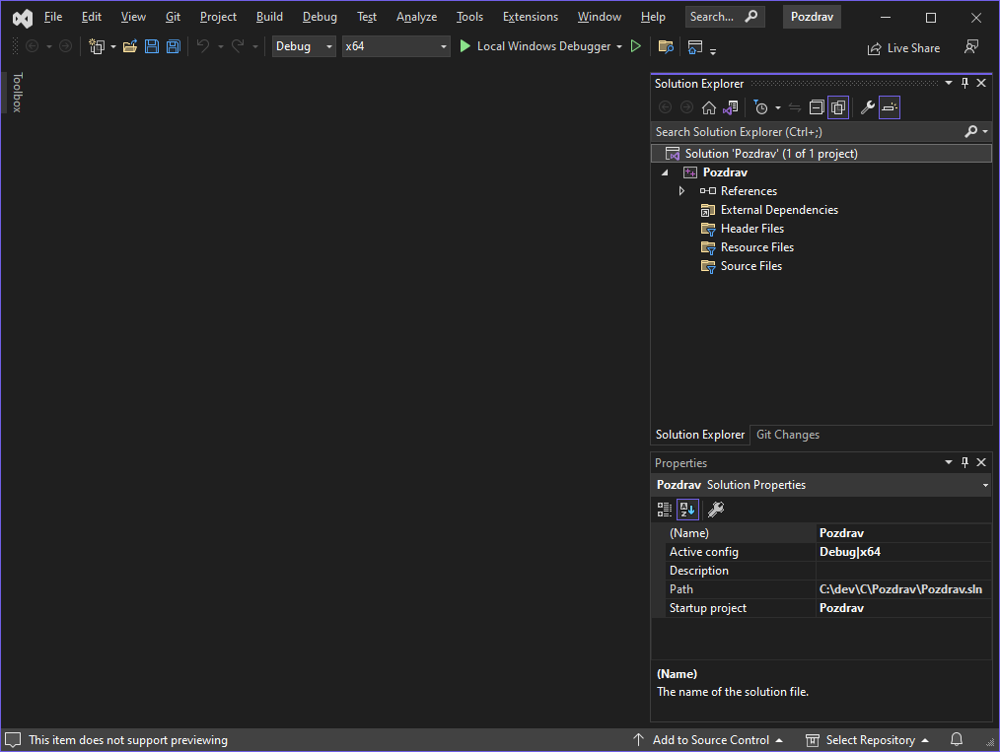
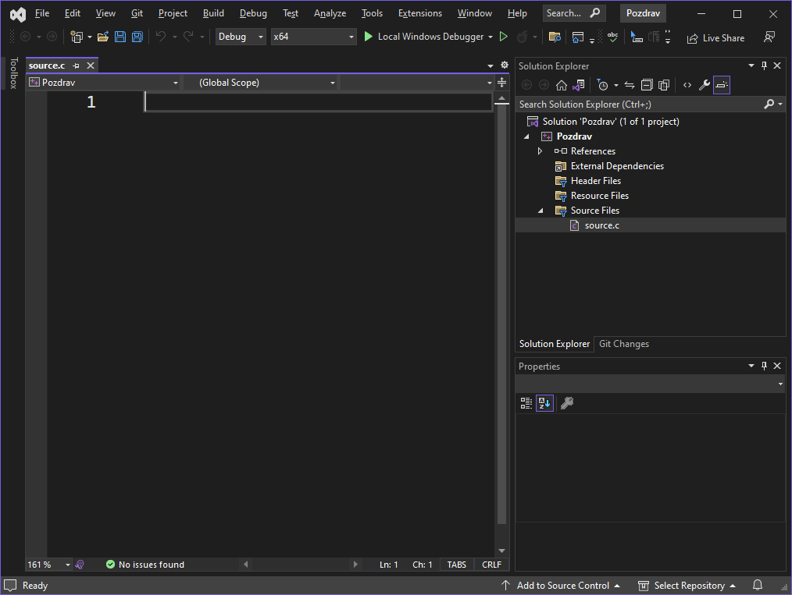
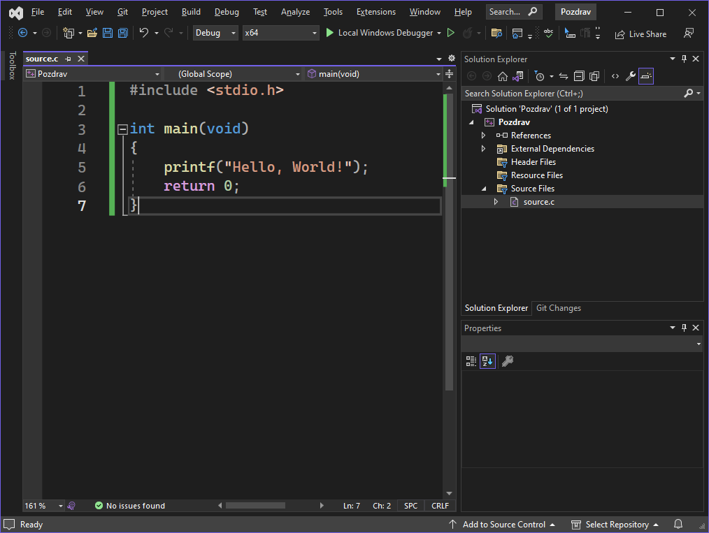

Рад у Visual Studio окружењу#
Након што си успешно инсталирао Microsoft Visual Studio Community Edition, да би започео са програмирањем, неопходно је да покренеш Visual Studio и креираш свој први пројекат. Креирање пројекта подразумева неколико корака које ћеш понављати сваки пут када крећеш са израдом новог програма.
Креирање новог пројекта#
Када покренеш Visual Studio одабери опцију Create a new project.
{kind=link}
У падајућем менију можеш одабрати програмски језик C++, платформу Windows и
тип пројекта Console. Овај одабир остаће запамћен и приликом следећег
покретања. У листи испод одабери Empty Project и кликни Next.
{kind=link}
Конфигурација пројекта је прилично једноставна. Потребно је да одабереш неко
име за свој пројекат и да одабереш локацију, односно директоријум у којем ћеш
сачувати пројекат. Након тога унеси име решења (енгл. Solution name) или
штиклирај опцију Place solution and project in the same directory. У
развојном окружењу Visual Studio, Solution је контејнер у оквиру којег можеш
чувати више пројеката. Рад са решењима није тема овог курса, па препоручујем да
увек штиклираш опцију Place solution and project in the same directory.
Након именовања пројекта и одабира локације кликни Create.
{kind=link}
Овим поступком си креирао празан пројекат за развој C/C++ конзолних апликација.
{kind=link}
Додавање изворног фајла у пројекат#
У празан пројекат потребно је да додаш изворни фајл - фајл у којем ћеш писати
програм у програмском језику C. У Solution explorer секцији, десним кликом на
Source files, иди на опцију Add, па кликни на New Item.
{kind=link}
Потом унеси име фајла са екстензијом .c, а не са понуђеном екстензијом
.cpp. Ако направиш изворни фајл са екстензијом .c, компајлер ће знати да се
ради о програму у програмском језику C, односно, ако изворни фајл има .cpp
екстензију, компајлер ће очекивати програм у програмском језику C++. Обично се
изворни фајл именује са source.c.
{kind=link}
Сада је интегрисано развојно окружење Microsoft Visual Studio Community Edition спремно за рад и развој конзолних апликација у програмском језику C.
{kind=link}
Унос и покретање програма#
Да би проверио да ли је све исправно инсталирано и да ли је исправно креиран нови пројекат, унеси следећи програм:
#include <stdio.h>
int main(void)
{
printf("Hello, World!");
return 0;
}
Унети програм у изворном фајлу треба да изгледа овако:
{kind=link}
У главном падајућем менију одабери Debug, па Start Without Debugging или
кликни на икону ⏵ или на тастатури притисни тастере CTRL и F5. Ако је
програм успешно покренут, појавиће се конзолни прозор у којем се види резултат
извршавања програма.
{kind=link}
Такође, у дну изворног фајла појавиће се секција Output.
{kind=link}
У секцији Output налазиће се текст сличан овом:
Build started...
1>------ Build started: Project: Pozdrav, Configuration: Debug x64 ------
1>source.c
1>Pozdrav.vcxproj -> C:\dev\C\Pozdrav\x64\Debug\Pozdrav.exe
========== Build: 1 succeeded, 0 failed, 0 up-to-date, 0 skipped ==========
========== Build started at 12:20 PM and took 02.554 seconds ==========
У петој линији порука ... Build: 1 succeeded, 0 failed ... говори ти да је
1 апликација успешно креирана и 0 неуспешно. У четвртој линији стрелица у
поруци показује на локацију на којој се налази извршни фајл апликације
... -> C:\dev\C\Pozdrav\x64\Debug\Pozdrav.exe.
Овај пројекат можеш да сачуваш тако што ћеш из главног падајућег менија
одабрати File па Save All или на тастатури притиснути тастере CTRL,
SHIFT и S.
Покретање програма из конзоле#
Затвори Visual Studio и покушај да пронађеш и покренеш своју апликацију. То можеш урадити на следећи начин:
покрени Command Prompt,
позиционирај се у директоријум у којем се налази извршни фајл и на крају
унеси име извршног фајла.
То можеш учинити следећим командама:
Microsoft Windows [Version 10.0.19045.3086]
(c) Microsoft Corporation. All rights reserved.
C:\Users\velim>cd C:\dev\C\Pozdrav\x64\Debug\
C:\dev\C\Pozdrav\x64\Debug>Pozdrav.exe
Hello, World!